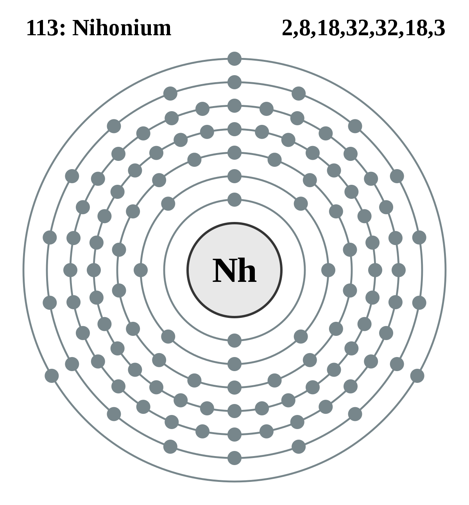

Nihônio
Inicialmente chamado de Unúntrio, do latim "ununtrium" , um nome temporário indicado pela IUPAC para o elemento, antes de ser oficialmente batizado.
Descoberto em 2004, por cientistas japoneses no RIKEN Nishina Center for Accelerator-Based Science, tem esse nome para fazer uma conexão direta com a nação onde o elemento foi descoberto. Nihon(-“a Terra do Sol Nascente”,traduzindo) é uma das duas maneiras de dizer “Japão” em japonês. O elemento 113 é o primeiro elemento a ser descoberto em um país asiático.
Julgando por sua posição na tabela periódica, especula-se que suas propriedades sejam semelhantes às do tálio, elemento situado logo acima na tabela periódica.
Você sabia?? Ainda não se conhecem compostos do nihônio, pois o elemento foi obtido em quantidades muito pequenas e seu tempo de desintegração radioativa é curto demais para serem preparados seus compostos.